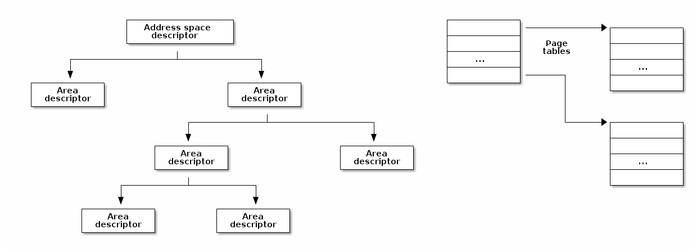

SO2 Lecture 07 - Memory Management¶
Lecture objectives:¶
- Physical Memory Management
- Page allocations
- Small allocations
- Virtual Memory Management
- Page Fault Handling Overview
Physical Memory Management¶
- Algorithms and data structure that keep track of physical memory pages
- Independent of virtual memory management
- Both virtual and physical memory management is required for complete memory management
- Physical pages are being tracked using a special data structure:
struct page - All physical pages have an entry reserved in the
mem_mapvector - The physical page status may include: a counter for how many times is a page used, position in swap or file, buffers for this page, position int the page cache, etc.
Memory zones¶
- DMA zone
- DMA32 zone
- Normal zone (LowMem)
- HighMem Zone
- Movable Zone
Non-Uniform Memory Access¶
- Physical memory is split in between multiple nodes, one for each CPU
- There is single physical address space accessible from every node
- Access to the local memory is faster
- Each node maintains is own memory zones (.e. DMA, NORMAL, HIGHMEM, etc.)
Page allocation¶
/* Allocates 2^order contiguous pages and returns a pointer to the
* descriptor for the first page
*/
struct page *alloc_pages(gfp_mask, order);
/* allocates a single page */
struct page *alloc_page(gfp_mask);
/* helper functions that return the kernel virtual address */
void *__get_free_pages(gfp_mask, order);
void *__get_free_page(gfp_mask);
void *__get_zero_page(gfp_mask);
void *__get_dma_pages(gfp_mask, order);
- Typical memory allocation algorithms have linear complexity
- Why not use paging?
- Sometime we do need contiguous memory allocations (for DMA)
- Allocation would require page table changes and TLB flushes
- Not able to use extended pages
- Some architecture directly (in hardware) linearly maps a part of the address space (e.g. MIPS)
- Free blocks are distributed in multiple lists
- Each list contains blocks of the same size
- The block size is a power of two
- If there is a free block in the N-size list, pick the first
- If not, look for a free block in the 2N-size list
- Split the 2N-size block in two N-size blocks and add them to the N-size block
- Now that we have the N-size list populated, pick the first free block from that list
- If the "buddy" is free coalesce into a 2N-size block
- Try until no more free buddy block is found and place the resulting block in the respective list
- 11 lists for blocks of 1, 2, 4, 8, 16, 32, 64, 128, 256, 512, 1024 pages
- Each memory zone has its own buddy allocator
- Each zone has a vector of descriptors for free blocks, one entry for each size
- The descriptor contains the number of free blocks and the head of the list
- Blocks are linked in the list using the lru field of
struct page - Free pages have the PG_buddy flag set
- The page descriptor keeps a copy of the block size in the private field to easily check if the "buddy" is free
Small allocations¶
- Buddy is used to allocate pages
- Many of the kernel subsystems need to allocate buffers smaller than a page
- Typical solution: variable size buffer allocation
- Leads to external fragmentation
- Alternative solution: fixed size buffer allocation
- Leads to internal fragmentation
- Compromise: fixed size block allocation with multiple sizes, geometrically distributed
- e.g.: 32, 64, ..., 131056
- Buffers = objects
- Uses buddy to allocate a pool of pages for object allocations
- Each object (optionally) has a constructor and destructor
- Deallocated objects are cached - avoids subsequent calls for constructors and buddy allocation / deallocation
- The kernel will typically allocate and deallocate multiple types
the same data structures over time (e.g.
struct task_struct) effectively using fixed size allocations. Using the SLAB reduces the frequency of the more heavy allocation/deallocation operations. - For variable size buffers (which occurs less frequently) a geometric distribution of caches with fixed-size can be used
- Reduces the memory allocation foot-print since we are searching a much smaller memory area, compared to buddy which can span over a larger area
- Employs cache optimization techniques (slab coloring)

- A name to identify the cache for stats
- object constructor and destructor functions
- size of the objects
- Flags
- Size of the slab in power of 2 pages
- GFP masks
- One or mores slabs, grouped by state: full, partially full, empty
- Number of objects
- Memory region where the objects are stored
- Pointer to the first free object
- Descriptor are stored either in
- the SLAB itself (if the object size is lower the 512 or if internal fragmentation leaves enough space for the SLAB descriptor)
- in generic caches internally used by the SLAB allocator

- Generic caches are used internally by the slab allocator
- allocating memory for cache and slab descriptors
- They are also used to implement
kmalloc()by implementing 20 caches with object sizes geometrically distributed between 32bytes and 4MB - Specific cache are created on demand by kernel subsystems

- Only used for free objects
- An integer that points to the next free object
- The last free object uses a terminator value
- Internal descriptors - stored in the slab
- External descriptors - stored in generic caches

Virtual memory management¶
- Used in both kernel and user space
- Using virtual memory requires:
- reserving (allocating) a segment in the virtual address space (be it kernel or user)
- allocating one or more physical pages for the buffer
- allocating one or more physical pages for page tables and internal structures
- mapping the virtual memory segment to the physical allocated pages

- Page table is used either by:
- The CPU's MMU
- The kernel to handle TLB exception (some RISC processors)
- The address space descriptor is used by the kernel to maintain high level information such as file and file offset (for mmap with files), read-only segment, copy-on-write segment, etc.
- Search a free area in the address space descriptor
- Allocate memory for a new area descriptor
- Insert the new area descriptor in the address space descriptor
- Allocate physical memory for one or more page tables
- Setup the page tables for the newly allocated area in the virtual address space
- Allocating (on demand) physical pages and map them in the virtual address space by updating the page tables
- Removing the area descriptor
- Freeing the area descriptor memory
- Updating the page tables to remove the area from the virtual address space
- Flushing the TLB for the freed virtual memory area
- Freeing physical memory of the page tables associated with the freed area
- Freeing physical memory of the freed virtual memory area
- Kernel
- vmalloc
- area descriptor:
struct vm_struct - address space descriptor: simple linked list of
struct vm_struct
- area descriptor:
- vmalloc
- Userspace
- area descriptor:
struct vm_area_struct - address space descriptor:
struct mm_struct, red-black tree
- area descriptor:
Fault page handling¶